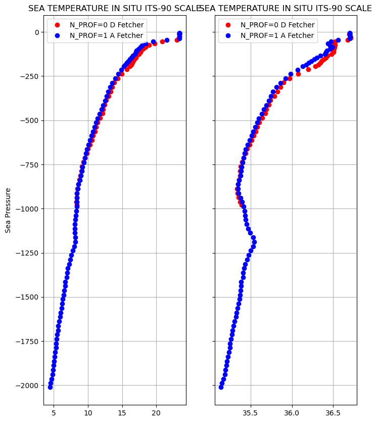
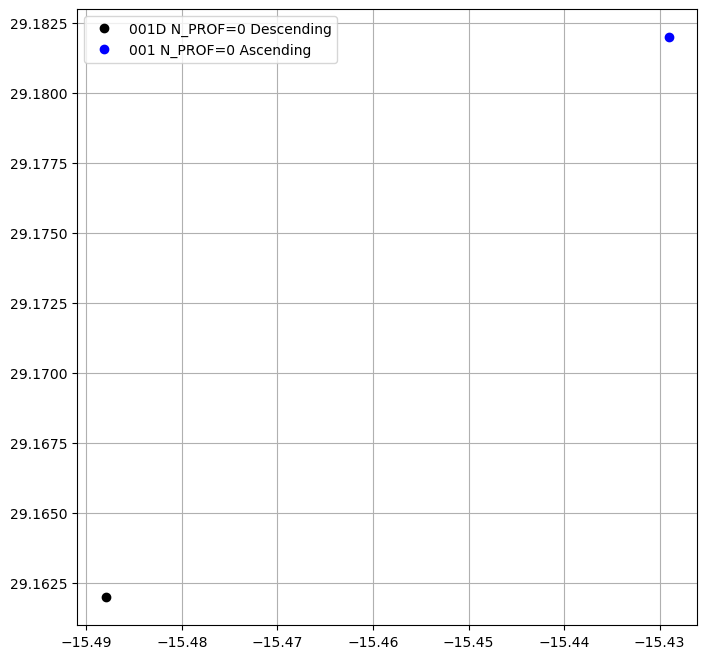

Accessing Argo data by float using Argopy
Accessing Argo data by float using Argopy#
Import the usual suspects:
import xarray as xr
xr.set_options(display_style="html", display_expand_attrs=False);
from matplotlib import pyplot as plt
plt.style.use('default')
Import argopy and set-up a data fetcher:
from argopy import DataFetcher as ArgoDataFetcher
argo_loader = ArgoDataFetcher(src='erddap', cache=True, cachedir='tmp')
/Users/gmaze/miniconda3/envs/aos/lib/python3.10/site-packages/pyproj/__init__.py:89: UserWarning: pyproj unable to set database path.
_pyproj_global_context_initialize()
You can load all profiles from a float:
apDS = argo_loader.float(6901254).load().data
or a single cycle:
argo_loader = argo_loader.profile(6901254, 1).load()
apDS2 = argo_loader.data
data = apDS2.argo.point2profile()
data
<xarray.Dataset>
Dimensions: (N_PROF: 2, N_LEVELS: 97)
Coordinates:
* N_PROF (N_PROF) int64 0 1
* N_LEVELS (N_LEVELS) int64 0 1 2 3 4 5 6 ... 91 92 93 94 95 96
LATITUDE (N_PROF) float64 29.16 29.18
LONGITUDE (N_PROF) float64 -15.49 -15.43
TIME (N_PROF) datetime64[ns] 2018-10-23T20:54:00 2018-1...
Data variables: (12/13)
CONFIG_MISSION_NUMBER (N_PROF) int64 1 1
CYCLE_NUMBER (N_PROF) int64 1 1
DATA_MODE (N_PROF) <U1 'R' 'R'
DIRECTION (N_PROF) <U1 'D' 'A'
PLATFORM_NUMBER (N_PROF) int64 6901254 6901254
POSITION_QC (N_PROF) int64 1 1
... ...
PRES_QC (N_PROF) int64 1 1
PSAL (N_PROF, N_LEVELS) float64 36.69 36.71 ... 35.14
PSAL_QC (N_PROF) int64 1 1
TEMP (N_PROF, N_LEVELS) float64 23.4 23.35 ... 4.559 4.474
TEMP_QC (N_PROF) int64 1 1
TIME_QC (N_PROF) int64 1 1
Attributes: (8)The core-Argo profile files contain the core parameters provided by a float: pressure, temperature, salinity, conductivity (PRES, TEMP, PSAL, CNDC).
fig, ax = plt.subplots(1, 2, figsize=(8,10), sharey=True)
#Temperature
ax[0].plot(data.TEMP[0],-data.PRES[0],'ro',label='N_PROF=0 D Fetcher')
ax[0].plot(data.TEMP[1],-data.PRES[1],'bo',label='N_PROF=1 A Fetcher')
ax[0].set_title(data['TEMP'].attrs['long_name'])
ax[0].set_ylabel(data['PRES'].attrs['long_name'])
ax[0].grid()
ax[0].legend();
ax[1].plot(data.PSAL[0],-data.PRES[0],'ro',label='N_PROF=0 D Fetcher')
ax[1].plot(data.PSAL[1],-data.PRES[1],'bo',label='N_PROF=1 A Fetcher')
ax[1].set_title(data['TEMP'].attrs['long_name'])
ax[1].grid()
ax[1].legend();

fig, ax = plt.subplots(figsize=(8,8))
ax.plot(data.LONGITUDE[0],data.LATITUDE[0],'ko',label='001D N_PROF=0 Descending')
ax.plot(data.LONGITUDE[1],data.LATITUDE[1],'bo',label='001 N_PROF=0 Ascending')
ax.grid()
ax.legend();

argo_loader.plot('trajectory', set_global=True)
(<Figure size 900x540 with 1 Axes>,
<GeoAxesSubplot:xlabel='longitude', ylabel='latitude'>)